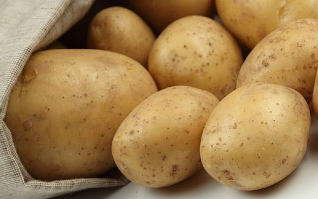
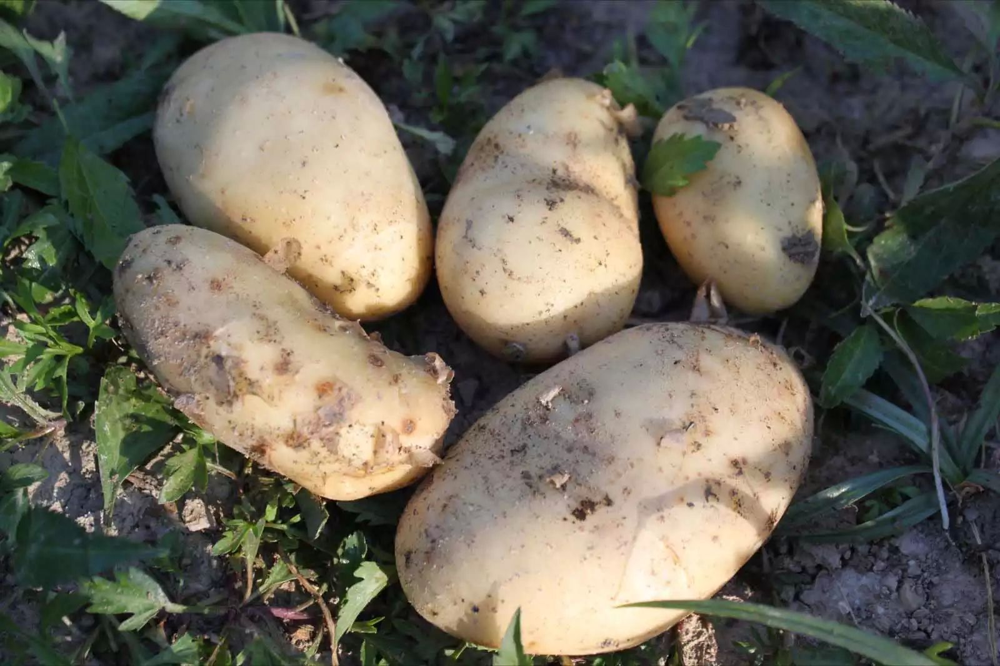

LilA
LilAProductos
El regalo de mi tierra
Cartera de productos
Papa Yungay
La papa yungay, es conocida por sus propiedades nutricionales tur tortor elementum, varius pellentesque velit convallis. Aenean tincidunt lectus auctor mauris maximus, ac scelerisque ipsum tempor. Duis vulputate ex et ex tincidunt, quis lacinia velit aliquet. Duis non efficitur nisi, id malesuada justo. Maecenas sagittis felis ac sagittis semper. Curabitur purus leo, tempus sed finibus eget, fringilla quis risus. Maecenas et lorem quis sem varius sagittis et a est. Maecenas iaculis iaculis sem. Donec vel dolor at arcu tincidunt bibendum. Interdum et malesuada fames ac ante ipsum primis in faucibus.
Mi Actividad
Mi cultivo de papas no utiliza abonos ni fertilizantes quimicos, al igual que tampoco se usan herbicidas ni inseciticidas, garantizando un producto netamente organico. Ultrices risus velit, sit amet blandit massa auctor sit amet. Sed eu lectus sem. Phasellus in odio at ipsum porttitor mollis id vel diam. Praesent sit amet posuere risus, eu faucibus lectus. Vivamus ex ligula, tempus pulvinar ipsum in, auctor porta quam. Proin nec dui cursus, posubur.
Informacion
Datos de poduccion
Producto principal:
Papa YungayCalidad:
Primera produccion organicaproduccion anual
14 TM por Hectaria de cultivo.